화학반응공학 ch4: 등온반응기의 설계 (1) : 등온 등압조건에서 비가역 1차 2차 반응
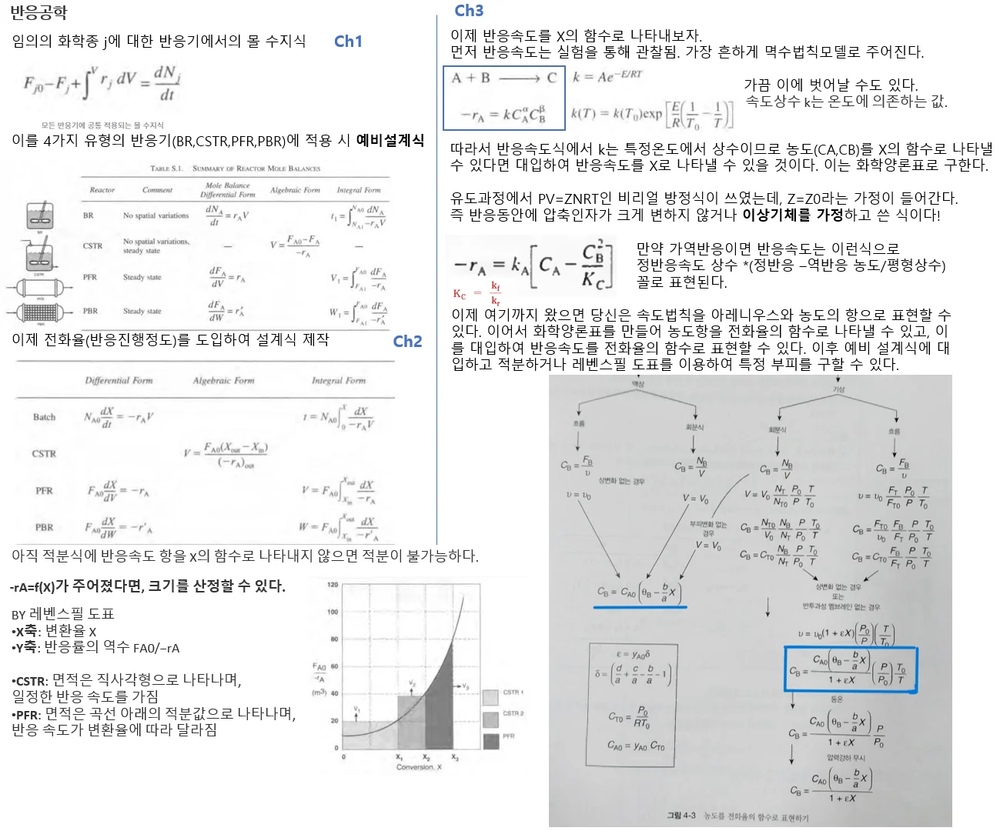
저번시간 요약
----------------------------
1장과 2장에서는 반응기에 대한 몰수지를 세우고, 이를 전화율의 함수로 표현하였다. 이후 3장에서 속도식과 화학양론을 통해 최종적으로 각 반응기에서 부피와 전화율 간의 관계를 세웠다. 이때 설계식에서 반응기의 부피는 전화율, 온도, 압력의 함수로 나타난다.
v= f(X,P,T)
4장에서는 앞에서 했던 내용을 종합하여 실전 문제에 적용해보는 시간을 가지려고 한다. 먼저 batch, CSTR, PFR에서 전화율의 항으로 나타낸 몰 수지를 풀 것이다. 하지만 지금까지 해왔던 몰 수지를 전화율의 항으로 표현하는 것은 복합반응에서는 쓸 수 없으며 이에 따라 전화율대신 CA, FA를 이용한 몰 수지를 사용하는 예제도 볼 것이다.
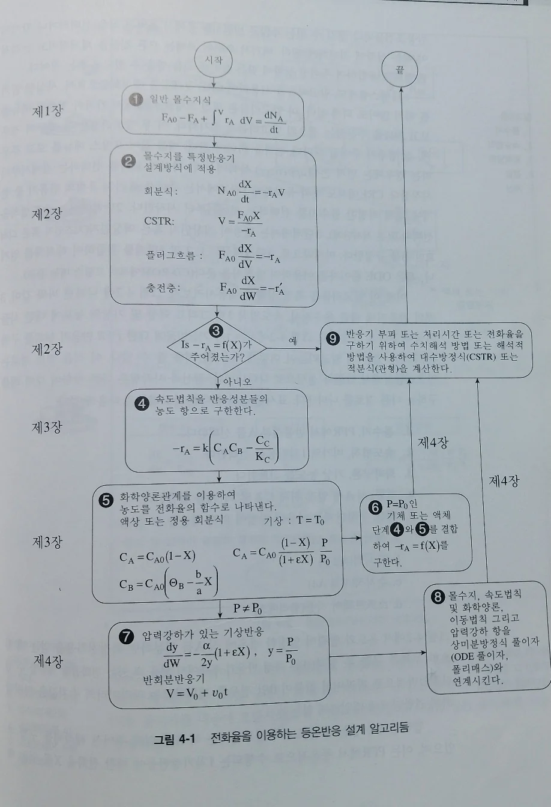
전화율을 이용하는 등온반응 설계 알고리즘은 위와 같다. 위 체계를 따르면 어떤 등온반응이든지 반응에 필요한 부피나 시간을 산정할 수 있다.
일단 사실상 이제부터는 알고리즘을 적용하여 기본적인 암기사항을 이끌어내는 것이 주 목적이다.
일단 사실하나 알고 가자. 화학공정의 대부분의 반응은 1차, 2차 비가역 공정이다
이유: 일단 경험적으로 1차, 2차 반응이 많은 것이 확인되었다. 근데 왜 비가역 공정이 흔할까? 화학 반응의 자연적 성질을 따져보면, 대부분의 반응은 가역적이다. 그러나 공정에서 다루는 경우는 조금 다르게 볼 수 있다.
- 목표 제품 생산 극대화: 산업적 공정에서는 반응이 완전히 진행되어 생성물이 더 이상 반응물로 되돌아가지 않도록 하는 것이 유리하다. 따라서 비가역 반응이 더 효율적이다. 특히, 연소, 산화, 중합과 같은 반응들은 비가역적으로 설계되며, 이러한 비가역성 덕분에 최대의 제품 수율을 얻을 수 있다.
- 설계 및 제어 용이성: 비가역 반응은 반응 조건이 간단하고, 평형 상태를 고려하지 않아도 되기 때문에 공정 설계와 제어가 상대적으로 쉬울 수 있다. 예를 들어, 연소 반응이나 산화 반응은 일방향으로 완전히 진행되어야 하므로 비가역 반응으로 처리된다.
- 가역반응일 경우 비가역으로 만듦: 비가역 반응이 공정 설계나 반응기 운전에서 더 단순하고 효율적인 결과를 얻을 수 있기 때문이다. 가역 반응은 평형에 도달하면 더 이상 반응이 진행되지 않으므로, 평형 상태를 무너뜨려서 반응을 비가역적으로 만드는 방법들이 사용된다.
추가: 가역반응을 비가역반응으로 만들기
다음은 가역 반응을 비가역 반응처럼 만들기 위한 몇 가지 방법입니다:
1. 생성물 제거:
- 가역 반응에서는 생성물이 축적되면서 반응이 평형에 도달하게 됩니다. Le Chatelier의 원리에 따르면, 생성물을 반응기 내에서 제거하면 평형이 다시 반응물 쪽으로 이동하여 더 많은 생성물을 만들게 됩니다.
- 이를 위해 증류, 응축, 흡수 등의 방법으로 생성물을 반응기 외부로 빼내면, 반응은 한 방향으로 계속 진행되어 마치 비가역 반응처럼 작동할 수 있습니다.
- 예를 들어, 암모니아 합성 반응에서 암모니아를 반응 중에 제거하면, 더 많은 암모니아가 생성되도록 반응이 계속해서 진행됩니다.
2. 반응 조건 변경 (온도, 압력 조절):
- 가역 반응은 온도나 압력에 매우 민감합니다. 평형 상수 KK는 온도에 따라 변하고, 온도를 낮추거나 높이는 방법으로 특정 반응 방향을 더 유리하게 만들 수 있습니다.
- 예를 들어, 발열 반응에서는 온도를 낮추면 생성물 쪽으로 평형이 이동합니다. 반대로 흡열 반응에서는 온도를 높이면 더 많은 생성물이 생깁니다. 이렇게 적절한 온도와 압력 조건을 선택하여 반응을 한 방향으로만 진행되게 할 수 있습니다.
3. 촉매 사용:
- 촉매는 가역 반응에서 양방향 반응 모두에 영향을 미치지만, 반응 경로를 선택적으로 촉진하는 특수 촉매를 사용하면 특정 방향으로만 반응을 유도할 수 있습니다.
- 예를 들어, 특정 촉매는 생성물의 분해보다는 반응물의 결합을 더 촉진할 수 있으며, 이를 통해 가역성을 줄일 수 있습니다.
4. 과량의 반응물 사용:
- 반응물 중 하나를 과량으로 투입하면, 가역 반응이 비가역 반응처럼 진행될 수 있습니다. 과량의 반응물이 있으면 평형이 생성물 쪽으로 이동하여 반응이 계속해서 진행됩니다.
- 예를 들어, 수소를 과량으로 사용하면 메탄과 같은 가역 반응이 비가역 반응처럼 작동할 수 있습니다.
5. 압력 변화:
- 기체 반응에서는 압력을 조절함으로써 반응을 비가역처럼 만들 수 있습니다. 반응의 기체 몰수 변화에 따라, 압력을 높이거나 낮추면 평형이 이동해 한쪽 방향으로 더 많은 생성물을 만들 수 있습니다.
- 예를 들어, 부피가 줄어드는 반응(몰 수가 감소하는 반응)에서는 고압을 걸면 반응이 생성물 쪽으로 더 많이 진행됩니다.
6. 특정 반응 경로 차단:
- 반응 경로를 제한하거나 제어하여 가역성을 줄일 수 있습니다. 반응 메커니즘에서 특정 경로를 선택적으로 차단하거나 유도하여, 원하는 방향으로만 반응이 일어나도록 하는 방법입니다.
7. 압력과 온도 조절 + 생성물 제거:
- 반응 속도를 높이거나 평형을 생성물 쪽으로 강제 이동시키기 위해 온도와 압력을 동시에 조절하고, 생성물을 지속적으로 제거하는 조합 방법도 흔히 사용됩니다. 이를 통해 가역 반응을 마치 비가역 반응처럼 처리할 수 있습니다.
이 방법들은 실제 산업 공정에서 반응이 더 효율적으로 진행되도록 하기 위해 많이 사용되며, 평형 상태에 도달하는 것을 막아 가역성을 제거하거나 줄이는 방식으로 가역 반응을 비가역적으로 처리할 수 있습니다.
1차와 2차 비가역 반응을 합치면 대략적으로 전체 화학 공정의 70%~80% 정도를 차지할 수 있다는 추정이 존재한다. 이는 산업 공정에서 비가역 반응이 차지하는 비중이 크기 때문이다.
나머지 20%~30%는 주로 고차 반응(3차, 4차 등)이나 가역 반응이 차지한다. 고차 반응이나 가역 반응은 공정에서 다루기 더 복잡하고, 평형에 도달하는 반응들이 많기 때문에 상대적으로 그 비율이 낮다.
또한 기상>액상>고체상 공정 순으로 또 흔하다. 따라서 1차 2차 비가역 기체상에 대한 케이스 스터디를 해놓고 그 결과를 정리해두면 여러가지 공정에 적용할 수 있어 편리하겠지? 그 밑작업을 하자는게 이번 챕터의 주요 요지다.
1. batch에서 1차 2차 반응
batch에서는 보통 액상반응이 진행되며 부피는 일정하다. 몰수지, 속도법칙, 화학양론을 결합하면 전화율의 미분항이 나오고, 이를 적분하여 특정 전화율을 얻기 위한 반응시간을 구할 수 있다.
@batch에서 비가역 1차 반응
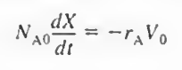
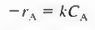 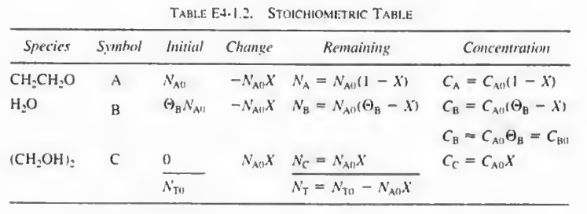
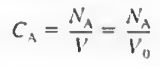 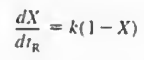
이를 적분하면 회분식 반응기에서 특정 전화율을 달성하는데 필요한 시간을 구할 수 있다.
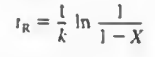
@ batch 비가역 2차반응에서의 반응시간은 추가로 다음과 같다.
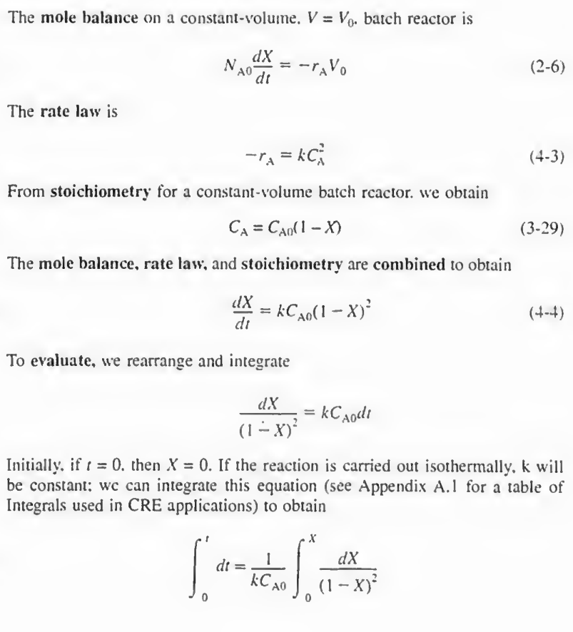
정리
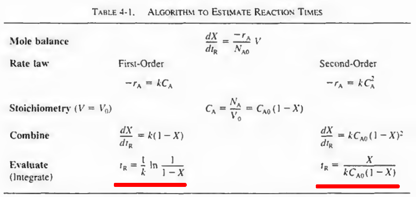
batch에서 비가역 1 2차 액상반응
추가적으로 실제에 유용한 정보인 운전시간을 알고 가자.
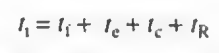 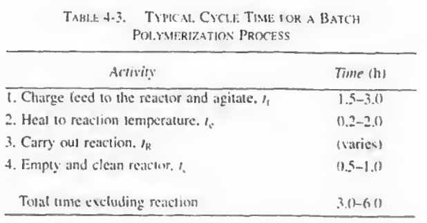
회분식 중합공정은 반응시간 뿐만 아니라 원료를 공급하고, 반응온도까지 가열하고, 청소하는 시간까지 포함된 후 반응시간이 더해져 총 운전시간이 결정된다. 따라서 반응을 제외한 총 시간은 표에서 보듯이 3~6시간 정도의 추가 시간이 소요된다.
따라서 하루에 운전하는 회분의 수를 최대로 하려면 반응시간의 최적화가 필요하다.
2.CSTR의 1차 2차 비가역 반응
CSTR역시 액상반응에 주로 사용된다. 이때 CSTR의 주요 변수는 공간시간 τ 으로, 반응기 내에서 반응물이 체류하는 평균 시간이다.
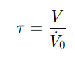
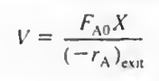
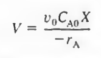
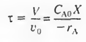
위 식을 보통 CSTR에서는 많이 쓴다.
만약 CSTR이 연결된 경우 두번쨰 CSTR에서는 τ 2= 초기농도* (X2-X1)/ 두번째 CSTR에서의 반응속도이다.
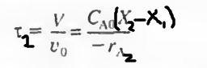
1차: 유도과정은 쉬우므로 생략한다.
CSTR의 공식에서 담쾰러 수 Da라고 하는 새로운 항이 소개되므로 이에 대해 알고가자.
담퀄러 수(Damköhler number, Da)는 화학 반응 공학에서 중요한 무차원 수로, 반응 속도와 물질 이동 속도의 비율을 나타낸다. 이 수는 흐름 반응기가 반응을 잘 수행하고 있는지 평가하는 데 유용하다. 일반적으로 다음과 같은 형태로 정의된다:
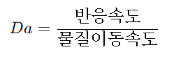
담쾰러 수는 τk 이거나(1차반응) τkCA0 (2차반응) 로 나타내질 수 있다. n차 반응일때 농도에 n-1차가 곱해진다고 보면 된다.
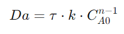
담퀄러 수의 해석
- Da<1: 물질 전달이 반응 속도를 제어하고 있음을 나타냅니다. 이 경우 물질이 반응물로 변환되기 전에 시스템을 통해 확산되어야 하므로, 반응 속도는 느리게 진행됩니다.
- Da>1: 반응 속도가 물질 이동 속도를 초과하여 반응이 빠르게 진행됨을 나타냅니다. 이 경우 반응이 진행되는 동안 물질이 충분히 공급됩니다.
- Da=1: 물질 이동과 반응 속도가 거의 비슷한 경우로, 이 경우 두 과정이 동등하게 기여합니다.
일단 담쾰러 수가 크면 클 수록 좋다고 보면 된다. 반응 속도가 물질 이동 속도를 초과하여 반응이 매우 빠르게 진행되며, 반응물이 계속 공급되고 있는거다. 이 경우 물질이 반응 지점에 충분히 도달하고 있어 반응 속도는 물질 이동에 의해 제한되지 않는다.
인 경우 배치 반응기를 사용하여 물질 이동을 개선할 수 있다.
또 담쾰러 수는 전화율과 관련이 있다.
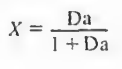 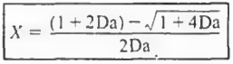
위는 각각 1차반응, 2차반응일때 CSTR에서 전화율을 담쾰러 수로 나타낸 것이다. 이때 담쾰러 수가 높을 수록 전화율이 높아지며 경험법칙에 의하면 담쾰러수가 10을 넘어가면 전화율이 90%정도 나온다.
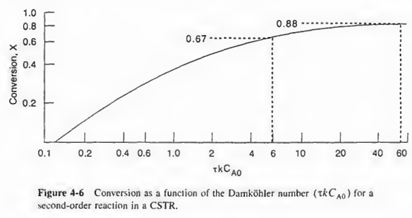
CSTR에서는 담쾰러 수와 전화율간의 관계식을 주로 쓴다.
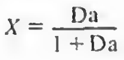
이때, 만약 직렬로 2개가 연결되어있다면
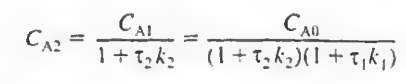
이렇게 되고, 두 반응기의 부피가 같고 같은 온도에서 운전되는 것을 가정하면 타우케이는 같다.
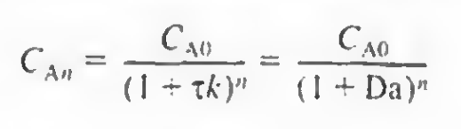
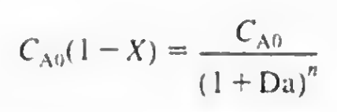 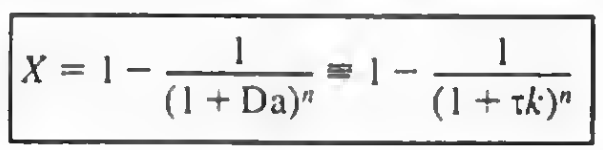
최종 전화율은 이렇게 된다.
그리고 CSTR에서 1차 2차 비가역 반응에서 설계식을 살펴보면 다음과 같이 나온다.
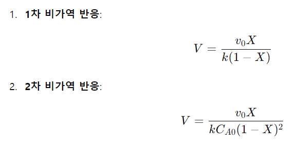
3.PFR
PFR의 경우 2차반응이면 다음과 같은 부피와 전화율간 관계식이 존재한다.
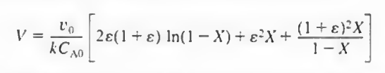
유도과정
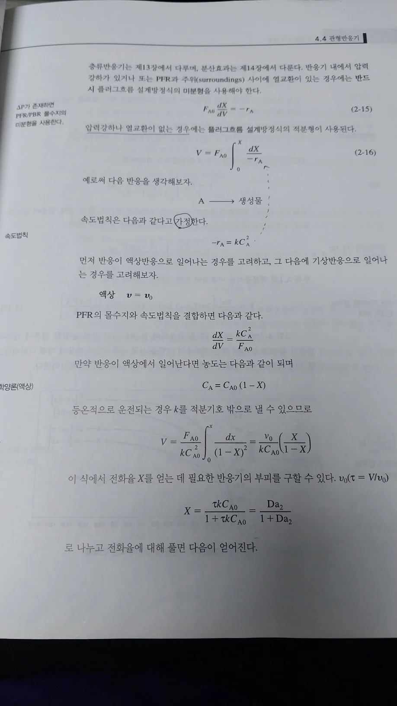
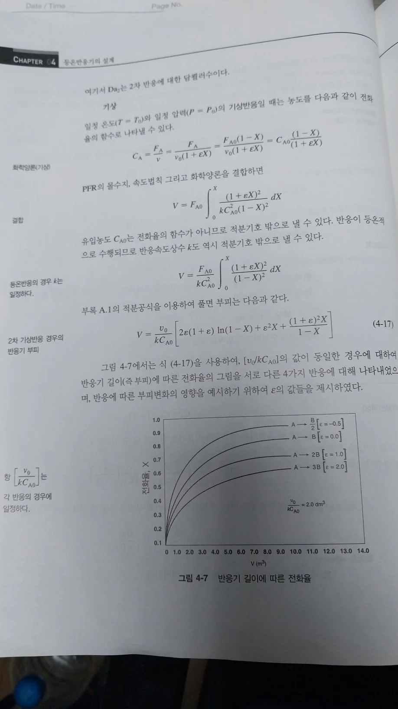
또 1차는 다음과 같이 나온다. 유도는 생략한다.
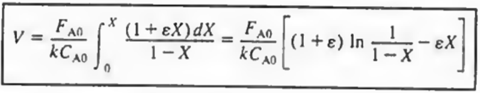
지금까지 논의를 총 정리하면 다음과 같다.
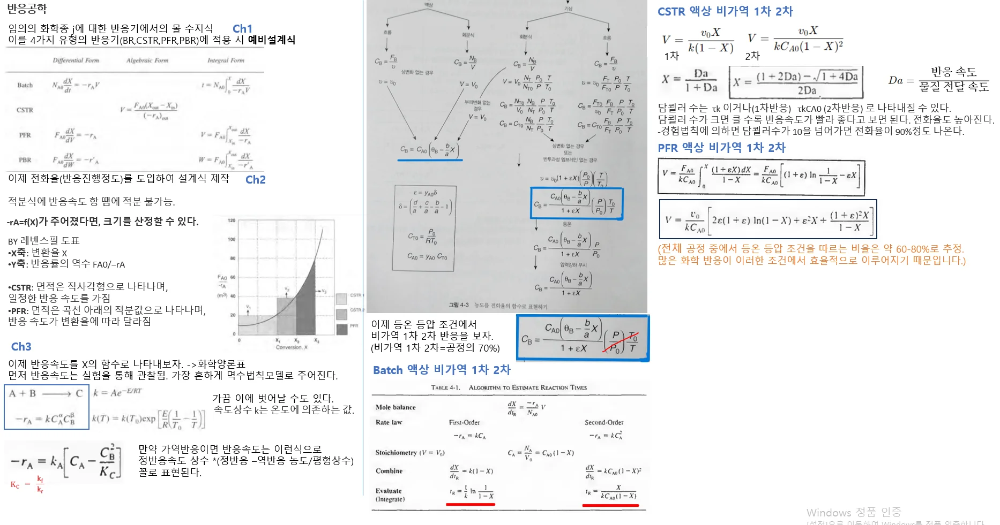